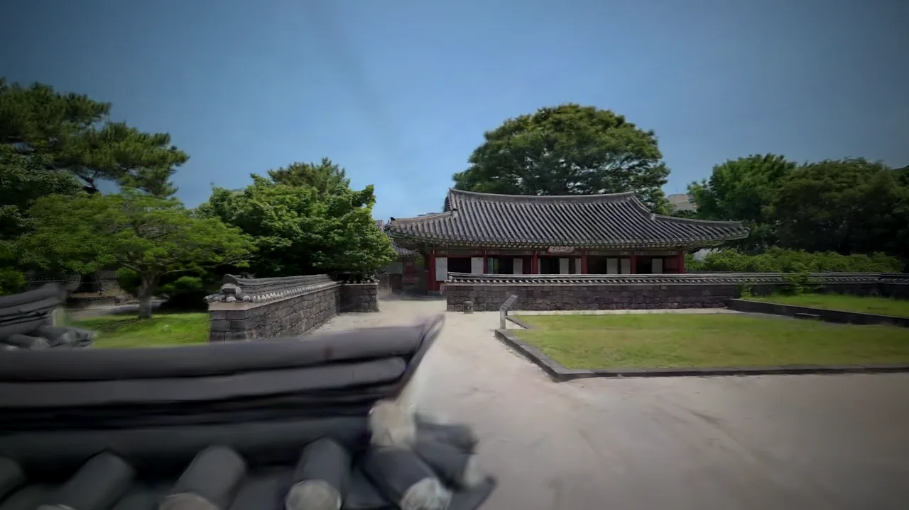
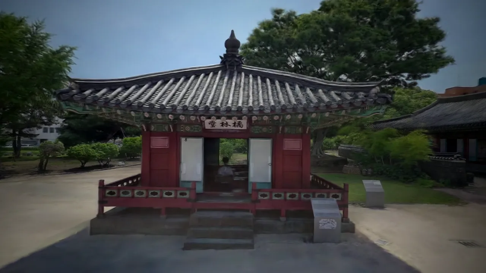
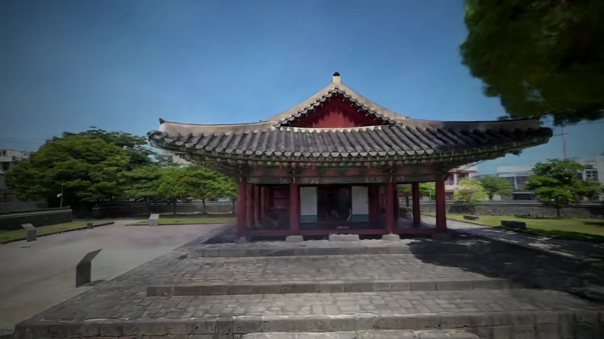
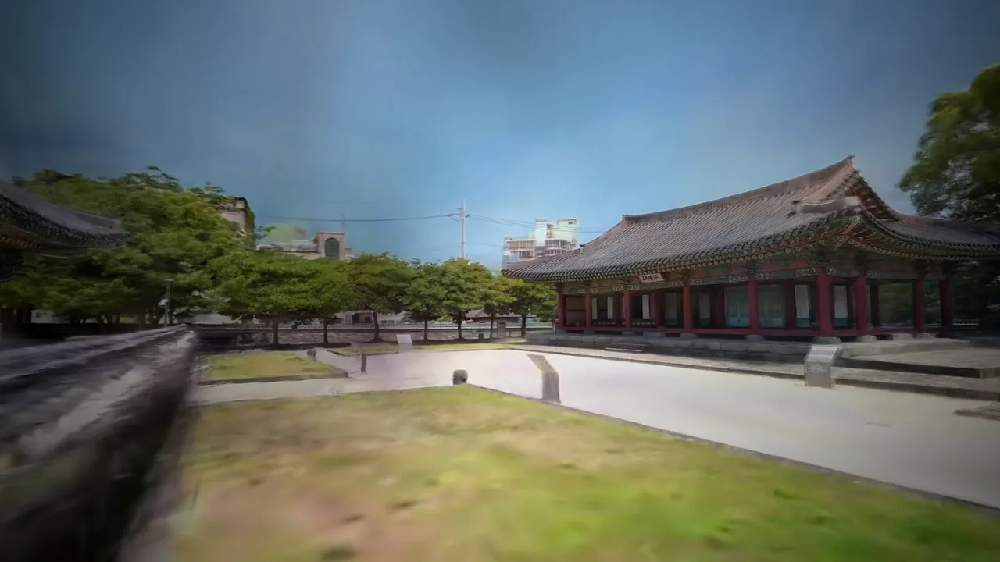
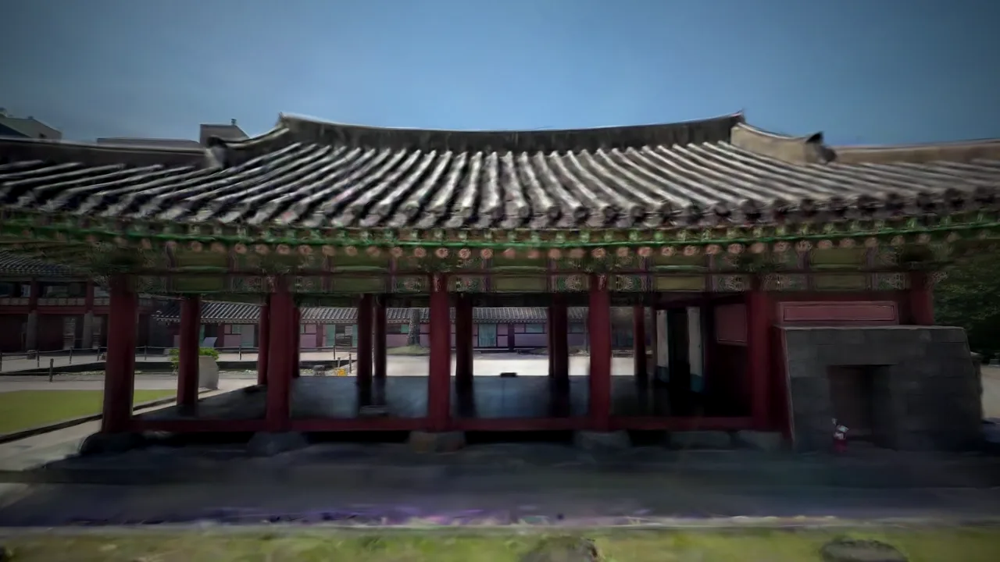
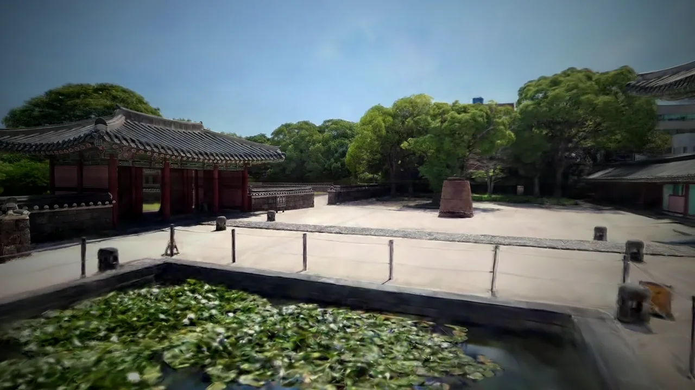

관아의 풍경 — 디지털 트윈에서






제주목관아, 제주를 다스리던 중심
제주목관아는 조선시대 제주를 다스리던 관아입니다. 두 겹의 문이 안과 밖을 가르고, 너른 마당을 두고 전각들이 둘러섭니다. 섬의 행정과 정사가 오랫동안 이곳에서 이루어졌습니다.
마당 앞에 선 관덕정은 제주에서 가장 오래된 목조건물로 꼽히는 누정입니다(보물 제322호). 귤나무 그늘의 귤림당, 제주목에만 있던 두 층 누각 망경루, 제주목사가 정사를 보던 연희각과 집무를 보던 홍화각, 그리고 연못을 곁에 둔 우련당이 하나의 공간으로 이어집니다.
- 관덕정제주에서 가장 오래된 누정 · 보물 제322호
- 망경루제주목에만 있던 두 층 누각
- 연희각 · 홍화각제주목사가 정사와 집무를 보던 전각
- 우련당연못을 곁에 둔 쉼의 자리
이 영상은 어떻게 만들어졌나 — 3D 가우시안 스플랫
이 산책의 모든 장면은 생성된 그림이 아니라, 현장에서 담은 실제 제주목관아입니다. 한 공간을 여러 각도에서 찍은 수많은 실제 사진으로, 그 공간을 통째로 되살리는 방식을 3D 가우시안 스플랫(3DGS)이라 합니다.
장면을 삼각형 면이 아니라, 색과 빛을 머금은 수백만 개의 작은 타원체 — ‘스플랫’으로 채웁니다. 보는 각도에 따라 빛과 질감이 자연스럽게 바뀌어, 사진처럼 선명하면서도 그 안을 카메라처럼 자유롭게 걸어 다닐 수 있습니다.
그래서 디지털 트윈은 한 장의 사진이 아니라, 들어가 걸을 수 있는 공간이 됩니다. 영상으로도, 체험으로도, 다시 태어납니다.
눈으로 걷는 트윈, 자로 재는 트윈
같은 제주목관아를 raven LiDAR로도 통째로 떠, 전각 사이의 거리와 마당의 높이를 자로 잰 듯 측정했습니다. 두 가지는 서로를 채웁니다.
가우시안 스플랫 · 보는 트윈
실제 사진으로 지어, 눈높이에서 걸어 들어가 둘러보는 디지털 트윈.

LiDAR 점군 · 재는 트윈
1,792만 점 · 세션 7개로 뜬 점군에서 전각 거리·마당 높이를 직접 재는 측량·분석.
관덕정 측량 보기 →